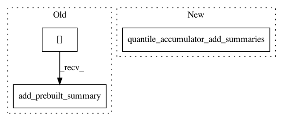

cf1cf0f9efbbe378af96c81a4edd82ab294810d9,tensorflow_transform/analyzers.py,_QuantilesGraphState,_make_get_buckets_callable,#_QuantilesGraphState#Any#Any#Any#,1509
Before Change
dtype=tf.string, shape=[options.num_features])
add_final_summary_op = [
qaccumulators[summary_ix].add_prebuilt_summary(
stamp_token=stamp_token, summary=final_summary[summary_ix])
for summary_ix in range(options.num_features)
]
// Create ops to flush the accumulator and return approximate boundaries.
After Change
final_summary = tf.compat.v1.placeholder(
dtype=tf.string, shape=[options.num_features])
add_final_summary_op = [gen_quantile_ops.quantile_accumulator_add_summaries(
resource_handles, stamp_token, tf.unstack(final_summary))]
// Create ops to flush the accumulator and return approximate boundaries.
with tf.control_dependencies(add_final_summary_op):
In pattern: SUPERPATTERN
Frequency: 3
Non-data size: 3
Instances
Project Name: tensorflow/transform
Commit Name: cf1cf0f9efbbe378af96c81a4edd82ab294810d9
Time: 2019-08-12
Author: tf-transform-dev@google.com
File Name: tensorflow_transform/analyzers.py
Class Name: _QuantilesGraphState
Method Name: _make_get_buckets_callable
Project Name: tensorflow/transform
Commit Name: cf1cf0f9efbbe378af96c81a4edd82ab294810d9
Time: 2019-08-12
Author: tf-transform-dev@google.com
File Name: tensorflow_transform/analyzers.py
Class Name: _QuantilesGraphState
Method Name: _make_add_input_callable
Project Name: tensorflow/transform
Commit Name: cf1cf0f9efbbe378af96c81a4edd82ab294810d9
Time: 2019-08-12
Author: tf-transform-dev@google.com
File Name: tensorflow_transform/analyzers.py
Class Name: _QuantilesGraphState
Method Name: _make_add_summary_callable